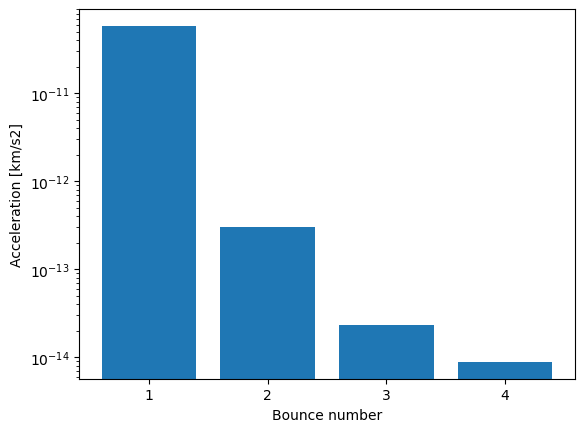

Solar Radiation Pressure: Various contributions
In this example we will compute the solar radiation pressure on a simple object and analyze the different contributions
Specular reflection
Secondary specular reflection
Diffusion
[1]:
from pyRTX.classes.Spacecraft import Spacecraft
from pyRTX.classes.RayTracer import RayTracer
from pyRTX.classes.PixelPlane import PixelPlane
from pyRTX.classes.SRP import SolarPressure
from pyRTX.core.analysis_utils import get_spacecraft_area
import trimesh as tm
import numpy as np
import matplotlib.pyplot as plt
import timeit
/Users/gcasciol/opt/anaconda3/envs/py38/lib/python3.8/site-packages/scipy/__init__.py:146: UserWarning: A NumPy version >=1.16.5 and <1.23.0 is required for this version of SciPy (detected version 1.24.3
warnings.warn(f"A NumPy version >={np_minversion} and <{np_maxversion}"
[2]:
mesh = tm.creation.annulus(0.5,1,height = 0.5)
flux = 1361 # W/m2
mass = 100
Let’s define a spacecraft object
[3]:
sc = Spacecraft(
name = 'My Spacecraft',
base_frame = 'SC Frame', # Name of the spacecraft body-fixed frame
spacecraft_model = {
'Bus': {
'file' : mesh,
'frame_type': 'UD', # type of frame (can be 'Spice' or 'UD'= User Defined)
'frame_name': 'SC Bus', # Name of the frame
'center': [0.0,0.0,0.0], # Origin of the component
'diffuse': 0.1, # Diffuse reflect. coefficient
'specular': 0.3, # Specular reflect. coefficient
},
},
)
#### TODOOOO
####
### Check the area computation!!!
#print(get_spacecraft_area(sc))
[4]:
RA = 0
DEC = 3*np.pi/180
pixelPlane = PixelPlane(
spacecraft = 'None',
mode = 'Fixed',
distance = 3,
width = 2,
height = 2,
ray_spacing = 0.01,
lon = RA,
lat = DEC,
units = 'm',
)
kernels = ['Embree3', 'Native', 'Embree']
for k in kernels:
rtx = RayTracer(sc,
pixelPlane,
kernel = k,
bounces = 4,
diffusion = False,
num_diffuse = 10)
srp = SolarPressure(sc, rtx, baseflux = None, grouped = False)
print('Results for kernel = {}'.format(k))
%timeit -n 5 accel = np.array(srp.compute(0)) * flux/mass
accel = np.array(srp.compute(0)) * flux/mass
print('srp_value = {}'.format(np.linalg.norm(accel, axis = 1)))
print('___________________________________________\n')
Results for kernel = Embree3
23.2 ms ± 1.51 ms per loop (mean ± std. dev. of 7 runs, 5 loops each)
srp_value = [5.825e-11 3.003e-13 2.314e-14 8.725e-15]
___________________________________________
Results for kernel = Native
2.51 s ± 234 ms per loop (mean ± std. dev. of 7 runs, 5 loops each)
srp_value = [5.856e-11 3.020e-13 2.286e-14 8.428e-15]
___________________________________________
Results for kernel = Embree
38.2 ms ± 1.76 ms per loop (mean ± std. dev. of 7 runs, 5 loops each)
srp_value = [5.841e-11 3.019e-13 2.330e-14 8.800e-15]
___________________________________________
[ ]:
[5]:
print(f'Found bounces {len(accel)}')
fig, ax = plt.subplots()
ax.bar(np.arange(1, len(accel)+1), np.linalg.norm(accel, axis = 1))
ax.set_yscale('log')
ax.set_ylabel('Acceleration [km/s2]')
ax.set_xlabel('Bounce number')
ax.set_xticks(np.arange(1, len(accel)+1));
Found bounces 4

[ ]:
[ ]: